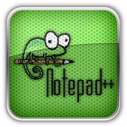

Virtual box

O VirtualBox é um programa em português de virtualização da Oracle que permite instalar e executar diferentes sistemas operacionais em um único computador sem complicações.Com ele, o usuário pode executar o Linux dentro do Windows 7, o Windows dentro do Mac, o Mac dentro do Windows e até mesmo todos os sistema suportados dentro de um. Você também pode instalar o Android em outras máquinas.
NotePad++

Notepad++ é um editor de texto e de código fonte de código aberto sob a licença GPL. Suporta várias linguagens de programação rodando sob o sistema Microsoft Windows (possível utilização no Linux via Wine).
As linguagens de programação suportadas pelo Notepad++ são: C, C++, Java, C#, XML, HTML, PHP, JavaScript, makefile, ASCII art, doxygen, ASP, VB/VBScript, Unix Shell Script, BAT, SQL, Objective-C, CSS, Pascal, Perl, Python, Lua, Tcl, Assembly, Ruby, Lisp, Scheme, Smalltalk, PostScript e VHDL. Além disto, usuários podem definir suas próprias linguagens usando um "sistema de definição de linguagem" integrado, que faz do Notepad++ extensível, para ter realce de sintaxe e compactação de trechos de código.
Visual Studio Code

Trata-se de uma ferramenta leve e multiplataforma que esta disponível para Windows, Mac OS e Linux, sendo executada nativamente em cada plataforma.
O VSCode atende a uma quantidade enorme de projetos (ASP .NET, Node.js) e oferece suporte para mais de 30 linguagens de programação, como JavaScript, C#, C++, PHP, Java, HTML, R, CSS, SQL, Markdown, TypeScript, LESS, SASS, JSON, XML e Python, assim como muitos outros formatos de arquivos comuns.